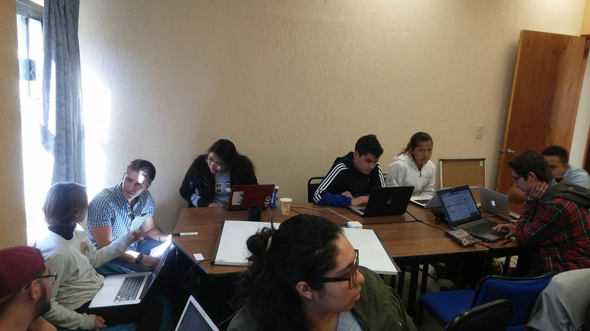
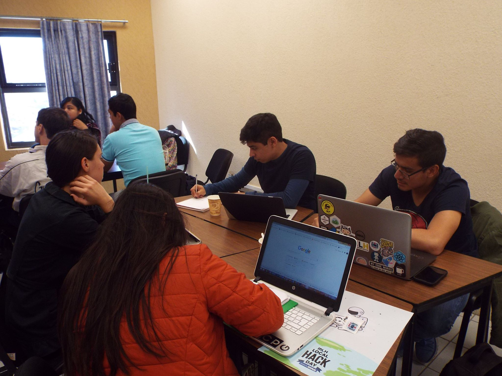

¿Cómo es un Locak Hack Day?
¿Qué es un Local Hack Day?
 El Local Hack Day es un hackathon de escala global y una celebración dedicada al apredizaje, la creación y la distribución. El Local Hack Day puede resumirse como un maratón de invención e innovación.
Preguntas frecuentes (FAQ)

- ¿Necesito saber programar?
- ¡No!, todo tipo de contribución es bienvenida dentro de un Local Hack Day, si no sabes programar, no te preocupes, puedes explotar tus habilidades y formar equipo con otros individuos que necesiten de tu experiencia.
- ¿Qué pasa si voy solo o no tengo equipo?
- ¡No entres en pánico! En este tipo de eventos muchos participantes van solos, esto está lejos de ser una desventaja, pues puedes hacer nuevos amigos en el Local Hack Day y formar un equipo de trabajo.
- ¿Debo de tener algún proyecto o idea empezada?
- No es necesario, puedes traer una idea o un proyecto en el cual estés trabajando, de igual forma puedes comenzar uno desde 0, las mejores ideas son espontáneas :D